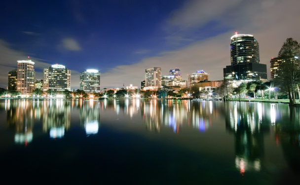

Orlando City
História da cidade:
A região onde hoje é localizado a cidade de Orlando, era habitada por uma tribo de nativos americanos conhecida pelo nome de seminoles. Durante a Primeira Guerra dos Seminoles um soldado chamado Orlando Reeves fora morto em 1836, em suas terras que produziam açúcar, seu corpo enterrado ao lado de uma árvore, com seu nome escrito na mesma.
Mais tarde alguns colonos que chegaram à região passaram a atribuir o nome escrito no túmulo ao local que ali eles se estabeleceram, assim Orlando fora como o lugar passou a ser conhecido.
Durante a Segunda Guerra dos Seminoles, em 1838 o Exército da União estabeleceu um acampamento em Fort Gadlin, poucos quilômetros ao sul do atual centro da cidade, mas foi rapidamente abandonado quando a guerra chegou ao fim.
Somente durante a Terceira Guerra dos Seminoles, por volta de 1850, que a região passou a receber uma ocupação considerável, os primeiros habitantes em sua maioria eram criadores de gado, e assim permaneceu durante a Guerra Civil Americana. De 1875 até 1895 a cidade passou por um fase de grande crescimento na produção de frutas cítricas, em especial a laranja, esta era ficou conhecida como a Era Premiada.
